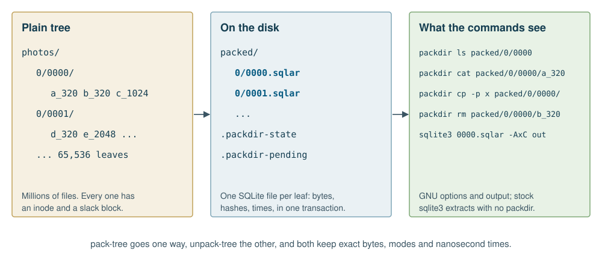

A directory of small files is an expensive thing to keep. Every file
costs an inode, a directory entry and a partly used disk block. Copying
a million of them means a million opens, and on a spinning disk a
million seeks. Backups, synchronizers and rm -r all pay
that price again, however little the data has changed.
The usual answer is an archive, and the usual price of an archive is
that you can no longer use the files. A tar file has no
index and cannot change in place. A zip file can be read at random, but
updating one rewrites the central directory, and nothing commits
atomically.
packdir keeps the files of a directory D as members of
one SQLite archive, D.sqlar. That gives you the
following:
packdir ls,
cat, stat, du, find,
rm, cp, mv and mkdir
treat a packed tree as ordinary files, with GNU’s options and GNU’s
output.sqlite3 D.sqlar -AxC D extracts the files with no packdir
installed.
packdir comes in two builds that behave the same: one in OCaml, which
also builds with OxCaml, and one in Rust. Each can be used as a command
or as a library. Each stores containers with either of two engines,
SQLite or Turso. Containers written by any combination can be read by
any other, and stock sqlite3 can read them all.
packdir suits data that is many small files, read whole, and rarely rewritten: preview and thumbnail caches, image tiles, document collections, build outputs and scraped pages. It suits slow disks and old file systems especially, because small-file overhead hurts most there.
It does not suit files a program must open directly with ordinary
system calls, because a member has no path the kernel can see. It does
not suit large files either: a member is held in memory while it is
stored. It offers no compression, by design: sz always
equals the length of data, which keeps the format simple
and is the right choice for already compressed data such as JPEG.